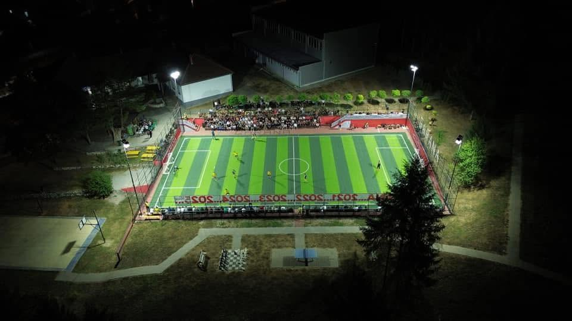
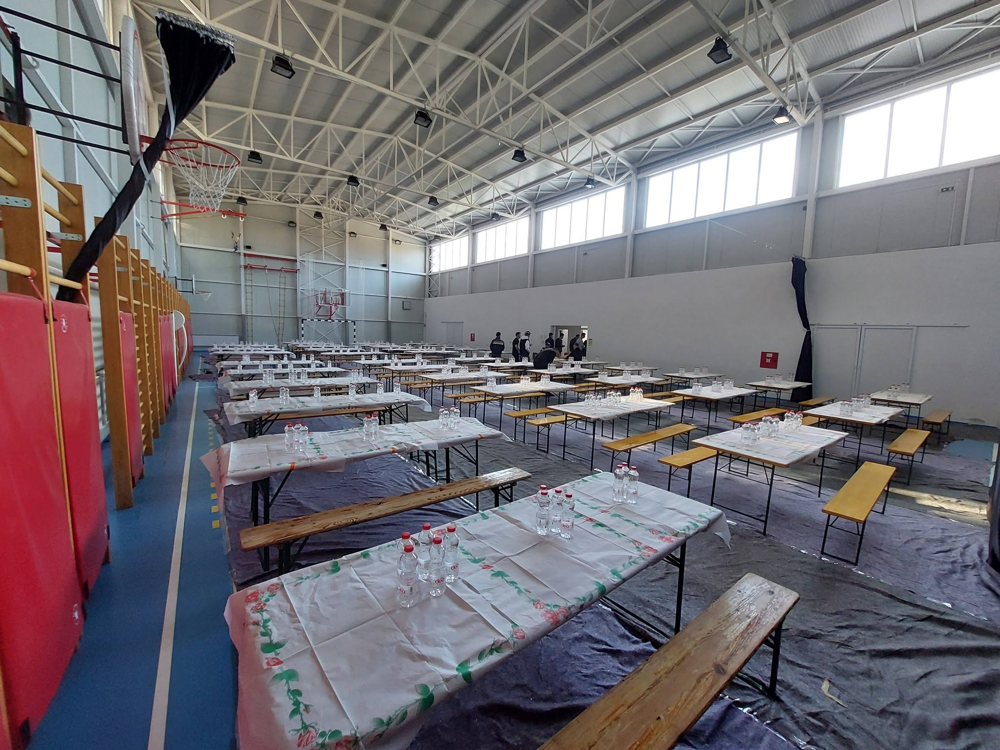

⚽Turneu Tradicional i Fshatit
Një nga ngjarjet më të rëndësishme në Garanë është turneu tradicional, i cili organizohet çdo vit dhe mbledh të rinj nga fshati dhe zonat përreth.
Ky turne nuk është vetëm një garë sportive, por një festë e vërtetë e bashkimit dhe shoqërisë. Ai krijon atmosferë gëzimi, respekti dhe konkurrencë të shëndetshme mes pjesëmarrësve.
Njerëzit mblidhen për të parë ndeshjet, për të kaluar kohë së bashku dhe për të ruajtur traditën që i bashkon të gjithë.
Dhe e gjith kjo si organizator kryesor i ketij turneu është Ilmi Kadriu.

Fshati Garanë në Kërçovë është një vend me histori të pasur dhe tradita të forta që janë ruajtur brez pas brezi. I rrethuar nga natyra e bukur dhe malet e qeta, ky fshat përfaqëson një pjesë të rëndësishme të trashëgimisë kulturore të zonës.
Mbledhja e fshatarëve
Fshati Garanë e ka traditë mbledhjen e fshatit dhe të hanë bashkarisht.
Ngrënja e ushqimit varet prej motit, ka raste kur haet jashta dhe mbrenda.
Ushqimet zakonisht janë shqipëtare tradicionale si: Gullashë, Pasulë, Zerde.
Zakonisht donacioni bëhet prej organizatës së fshatit.
Çka e bënë këtë fshatë më të veçcantë?
Festat fetare
Në këtë rajon respektohen shumë:
Fitër Bajrami,
Kurban Bajrami,
dhe
Ramazani.
Sa i përket çështjes së Bajramit falja bëhet realisht në dy xhamiat e reja.
Ku të dy hoxhallarët kanë xhemat të mjaftueshëm për mbushjen e tyre.
Kurse për Ramazan pas faljes së akshamit kush mundë donaton sjelljen e ushqimit me grumbullimin e bashkë-fshatarëve në njërën prej dy xhamive për iftarë.
Viteve të fundit ka filluar edhe ndonjëherë shtrimi i syfyrëve në xhami, ku bashkë-fshatarët pas kryerjes së namazit të natës, hanë dhe syfyrin bashkarisht.
Tradite fetare:
Vizita te familjarët,
shtrimi i sofrave me ushqime tradicionale, dhurata për fëmijët.
